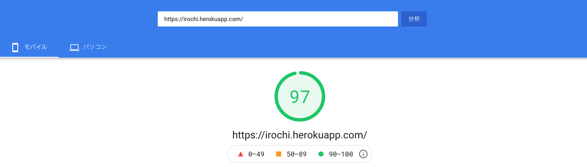
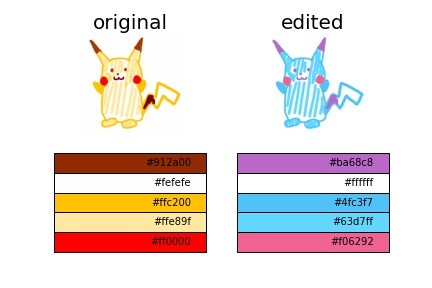

topに戻る
ここはなるが作ったページです
目次
自己紹介
過去の製作物
この先やりたいこと
おまけ
↓
自己紹介
2000年広島生まれ
趣味はテニス・キーボードを弾くこと
大学の専攻は情報システム系
githubはここから
↑
↓
過去の製作物
Irochi
入力画像の色を自由に変換することができます。
このサイトはflaskを使って作られています。
このサイトは読み込みの速さと処理の速さが特徴です。
こちら
のリンクからアプリに移動できます。 
↑
↓
過去の製作物
Hurocha
Hurochaでは直感的な操作によってフローチャートを作成できます。
このサイトはRuby on Railsを使って作られています。
作成したものをpdfあるいは画像としても保存できるのも特徴です。
こちら
からHurochaに移動できます。
↑
↓
この先
やりたいこと
画像処理を用いたアプリの作成
機械学習コンペでメダルをとる。
↑
↓
おまけ
ここまで見てくれてありがとうございます。
作ったものを実際に使った結果載せときます。
入力画像
出力画像

↑